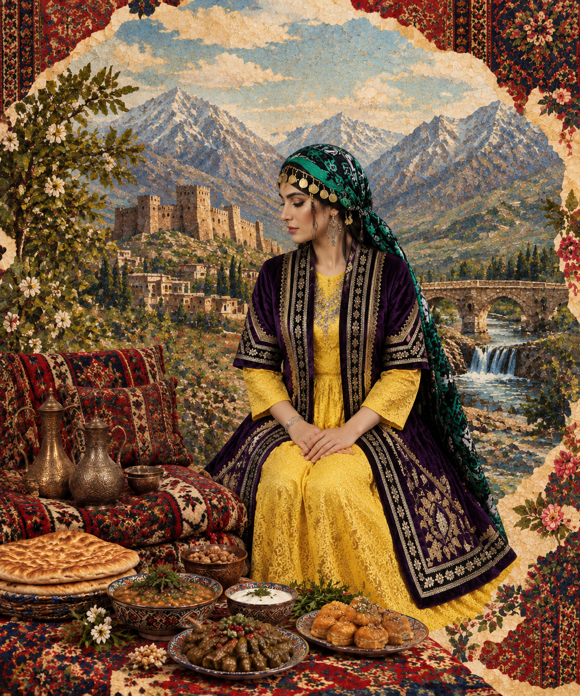
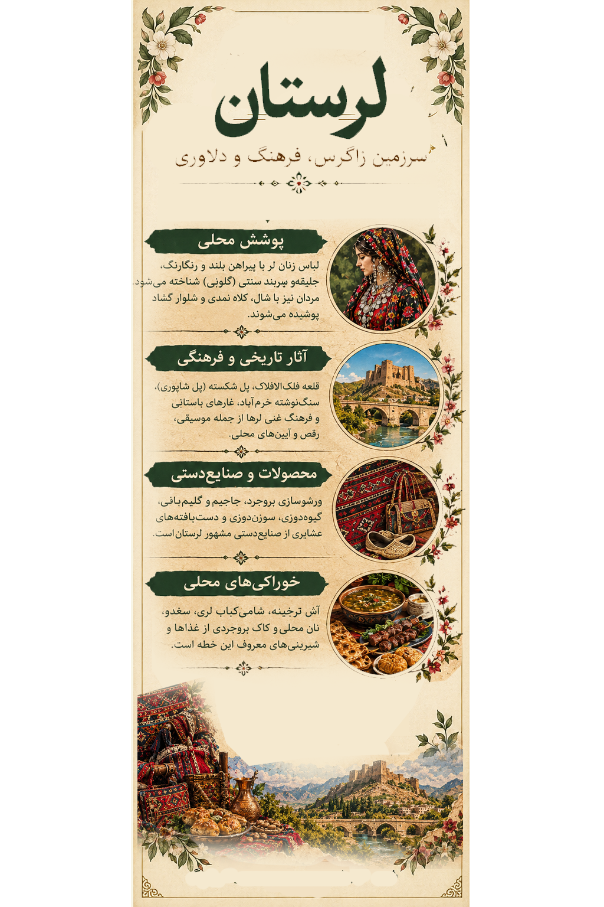

گلونیGolvani
سربند سنتی زنان لر که در رنگها و طرحهای گوناگون دیده میشود و در جشنها و رویدادهای فرهنگی نیز کاربرد دارد.A traditional Luri women's headscarf, found in varied colors and patterns and worn at cultural events.
این صفحه نگاهی به پوشش زنان لر، فرهنگ روستاها، میراث تاریخی، طبیعت زاگرس، خوراکهای محلی و صنایعدستی لرستان دارد.This page explores Luri women’s dress, village culture, historic heritage, Zagros landscapes, local foods, and handicrafts of Lorestan.

این اثر، بازخوانی هنری پوشش زنان لرستان و پیوند آن با کوهستانهای زاگرس، تاریخ و خاطرههای فرهنگی مردم این سرزمین است. رنگ و نقش در کنار هم، روایتی از هویت و زندگی محلی میسازند.This artwork is an artistic interpretation of women's dress in Lorestan and its connections to the Zagros Mountains, history, and cultural memory.

پوشش زنان لر در مناطق مختلف، با توجه به محل زندگی، دورهٔ تاریخی، سن و مناسبت تفاوت داشته است. گلونی، سربند شناختهشدهٔ زنان لر، یکی از نمادهای فرهنگی این پوشش است. لباسهای محلی میتوانند شامل پیراهن، جلیقه یا بالاپوش، دامن یا شلوار و سربند باشند؛ شکل و ترکیب دقیق آنها در همهٔ نواحی یکسان نیست.Women's traditional dress in Luri communities has varied by location, historical period, age, and occasion. The Golvani headscarf is a well-known cultural symbol. Local outfits may include a shirt, vest or outer garment, skirt or trousers, and head covering, with regional differences.
سربند سنتی زنان لر که در رنگها و طرحهای گوناگون دیده میشود و در جشنها و رویدادهای فرهنگی نیز کاربرد دارد.A traditional Luri women's headscarf, found in varied colors and patterns and worn at cultural events.
ترکیب و رنگ لباس بر اساس منطقه و مناسبت تفاوت دارد؛ برای نسبت دادن یک مدل دقیق به روستایی خاص، به منبع محلی نیاز است.Outfit combinations and colors vary by area and occasion; specific village-level claims need local documentation.
روستاها و نواحی اطراف خرمآباد بخشی از تنوع فرهنگی لرستاناند. این معرفی، نمونههایی از مکانها و زندگی منطقه را نشان میدهد؛ نه اینکه پوشش واحد و مستندی برای تمام روستاها وجود داشته باشد.Villages around Khorramabad are part of Lorestan's cultural diversity. These examples introduce local places and life without assuming one documented outfit for every village.
از نامهای محلی اطراف خرمآباد؛ برای ثبت جزئیات پوشش و آیینهای ویژهٔ روستا، بررسی میدانی یا منبع محلی لازم است.A local area near Khorramabad; village-specific clothing and customs require local documentation.
از نواحی پیرامون خرمآباد؛ زندگی روستایی و پیوند با طبیعت زاگرس، زمینهای برای روایت فرهنگی این منطقه فراهم میکند.Areas around Khorramabad where rural life and the Zagros landscape form part of the local story.
منطقهای در لرستان که به آبشار بیشه شناخته میشود؛ این نام را نباید با محلهای درون شهر خرمآباد یکی دانست.An area in Lorestan known for Bisheh Waterfall; it should not be confused with a neighborhood inside Khorramabad.
دژ تاریخی شاخص خرمآباد که بر فراز بلندی شهر قرار گرفته و از نمادهای شناختهشدهٔ لرستان است.A landmark historic fortress overlooking Khorramabad.
بازماندهای تاریخی از پلسازی در منطقهٔ خرمآباد و بخشی از میراث معماری لرستان.Historic bridge remains reflecting Lorestan's architectural heritage.
سازهای تاریخی در خرمآباد که با مدیریت آب و زندگی شهری گذشته پیوند دارد.A historic structure in Khorramabad associated with water management.
از آثار تاریخی شهر خرمآباد و نشانهای از معماری دورههای گذشته.A historic monument reflecting earlier architectural traditions.
یکی از پلهای تاریخی منطقه که اهمیت مسیرهای ارتباطی و پلسازی در لرستان را نشان میدهد.A historic bridge illustrating the importance of routes and bridge building in Lorestan.
غارهای درهٔ خرمآباد شواهد مهمی از سکونت انسان در دورههای بسیار کهن را در خود دارند.Caves in the Khorramabad Valley preserve important evidence of ancient human presence.
از چشماندازهای طبیعی شناختهشدهٔ لرستان در دامنههای زاگرس.One of Lorestan's best-known natural landmarks in the Zagros region.
کوهستان، جنگلها، چشمهها و مراتع در شکلگیری شیوهٔ زندگی و فرهنگ منطقه نقش داشتهاند.Mountains, forests, springs, and pastures have shaped regional life and culture.
خوراکهای محلی، بخشی از حافظهٔ خانوادگی و فرهنگ مهماننوازی مردم لرستاناند. نام و شیوهٔ تهیهٔ غذا ممکن است از شهری به شهر دیگر تفاوت داشته باشد.Local foods are part of family memory and hospitality in Lorestan. Names and recipes may vary from one town to another.
خورشتی محلی با نامی برگرفته از سیب؛ دستور تهیه میتواند میان خانوادهها متفاوت باشد.A local stew named for apple, with recipes that may vary by household.
نوعی کوفته که نام آن به استفاده از نخودچی یا آرد نخود اشاره دارد.A kofta whose name refers to chickpea or chickpea flour.
کبابی شناختهشده در فرهنگ غذایی بروجرد.A kebab associated with Borujerd's food culture.
از آشهای محلی که نام ماش در عنوان آن آمده است.A regional soup whose name refers to mung beans.
خوراکی محلی با گوشت که با نام خرمآباد شناخته میشود.A meat-based local dish associated with Khorramabad.
خورشتی محلی با طعمی ترش که در فهرست غذاهای لرستان آمده است.A tangy stew listed among Lorestan's local foods.
یکی از خوراکهای سنتی معرفیشده در فهرست غذاهای محلی لرستان.A traditional dish included in lists of Lorestan's local foods.
آبگوشت محلی با نامی خاص که بخشی از تنوع غذایی منطقه است.A local broth with a distinctive name, part of the region's culinary diversity.
خوراک محلی که در فهرست غذاهای سنتی لرستان معرفی میشود.A dish featured in lists of Lorestan's traditional foods.
خوراکی سنتی که نام آن در میان خوراکهای شناختهشدهٔ لرستان دیده میشود.A traditional food listed among Lorestan's well-known local dishes.
برای دستور پخت و مواد دقیق هر غذا، به منبع معرفیشده مراجعه کنید؛ دستورها ممکن است منطقهای و خانوادگی باشند.See the source article for recipes and ingredients; methods may vary by locality and family.
کلوچهٔ قندی مشهور بروجرد که با روغن حیوانی و گاهی مغز بادام تهیه میشود.A famous Borujerd sugar cookie made with animal butter and sometimes almonds.
شیرینی لایهای نازک که در لرستان نیز بهعنوان سوغاتی تهیه میشود.A thin, layered pastry also found as a souvenir in Lorestan.
از شیرینیهای سنتی عرضهشده در شیرینیپزیهای استان.Traditional sweets available from bakeries in the province.
نان یا شیرینی سنتی غرب ایران که در خرمآباد نیز تهیه میشود.A traditional western Iranian bread or pastry also made in Khorramabad.
از خوراکیهای سوغاتی بروجرد و دیگر نقاط استان؛ گونههای مختلفی از آن عرضه میشود.Traditional edible souvenirs from Borujerd and other parts of the province.
ترکیبی خوراکی از ارده و شیره که در فهرست سوغات منطقه معرفی میشود.A traditional combination of tahini and syrup listed among local edible souvenirs.
نان سنتی که روی صفحهٔ فلزی محدب یا ساج پخته میشود.Traditional bread cooked on a metal griddle known as a saj.
سمنوی سنتی تهیهشده از جوانهٔ گندم که در بروجرد نیز شهرت دارد.Traditional wheat-sprout samanu, also known in Borujerd.
عسل از محصولات محلی مرتبط با مراتع و طبیعت کوهستانی لرستان است.Honey is a local product associated with Lorestan's mountain pastures.
روغن سنتی تهیهشده از کرهٔ حیوانی که روغن دلفان نیز به آن شناخته میشود.Traditional clarified animal butter, with Delfan known for this product.
صنایعدستی لرستان با زندگی عشایری، مواد طبیعی و مهارتهای منتقلشده میان نسلها پیوند دارند. جاجیمبافی از هنرهای زنان عشایر است و ورشوسازی بروجرد نیز شهرت تاریخی دارد.Lorestan's handicrafts are connected to nomadic life, natural materials, and skills passed between generations. Jajim weaving is associated with nomadic women, while Borujerd is known for its historic metalwork.
دستبافتهای رنگارنگ که با نخهای پشمی و نقشهای هندسی تولید میشود و از هنرهای شناختهشدهٔ عشایر لرستان است.A colorful woven textile made with wool yarn and geometric patterns, associated with Lorestan's nomadic communities.
هنر ساخت ظروف و اشیای فلزی از ورشو؛ از جمله سینی، قندان، قاشق و سماور.Metalwork using nickel-silver alloy to make trays, sugar bowls, spoons, and samovars.
پاپوش سبک سنتی که از الیاف و روشهای بافت محلی ساخته میشود.Light traditional footwear made using local fibers and weaving techniques.
هنر شکل دادن به پشم برای ساخت زیرانداز، پوشاک و دیگر محصولات نمدی.The craft of shaping wool into mats, clothing, and other felt products.
بافت حصیر برای ساخت سبد، زیرانداز و وسایل کاربردی از الیاف گیاهی.Plant-fiber weaving used to make baskets, mats, and practical household items.
دستبافتههایی با نقشها و رنگهای محلی که در کنار جاجیم بخشی از هنرهای نساجی منطقهاند.Textiles with local patterns and colors that form part of the region's weaving traditions.
هنر شکل دادن به چوب برای تولید اشیای کاربردی و تزئینی.The craft of shaping wood into useful and decorative objects.
برای بررسی بیشتر پوشش، غذاها، سوغات و صنایعدستی لرستان، این منابع را ببینید.Explore these sources for more information about Lorestan's food, souvenirs, and handicrafts.
این صفحه برای معرفی فرهنگی و هنری تهیه شده است. نام غذاها و صنایعدستی از منابع معرفیشده گردآوری شدهاند؛ جزئیات محلی ممکن است متفاوت باشد.This page is a cultural and artistic introduction. Food and handicraft names are drawn from the listed sources; local details may vary.